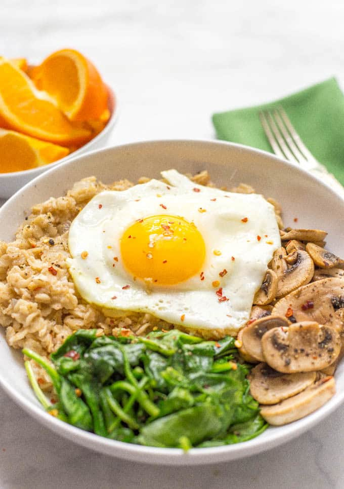

Home
Oatmeal with egg and veggies

Easy to make oatmeal rich in protein and fibre
Ingredients
- Rolled oats
- 1 egg
- Spinach or bok choy
- 1 clove garlic, minced
- Olive oil
- Salt
- Black pepper
Steps
- Cook the rolled oats with water according to the package instructions.
- Heat a small amount of olive oil in a pan and sauté the minced garlic until fragrant.
- Add the vegetables and cook until softened.
- Crack the egg into the pan and scramble it gently with the vegetables.
- Add the cooked oatmeal to the pan and mix well.
- Season with salt and black pepper, then serve warm.
Home